Real support/query examples straight from the FAME release — one representative case per source dataset. Filter by anatomy or modality, then toggle each card between the raw image, the ground-truth overlay, and the isolated mask.
Overlay = ground-truth ROI (translucent fill + white contour) rendered in the anatomy colour. Foreground % is the share of pixels belonging to the target ROI in the shown slice; tiny-lesion cases (marked ⤢ zoom) are cropped around the ROI so the target stays visible. All samples are decoded directly from the public HuggingFace release.
Few-shot medical image segmentation (FS-MIS) aims to segment novel regions of interest (ROIs) from a few annotated support examples. Despite rapid progress, existing FS-MIS solutions span diverse paradigms but are evaluated under inconsistent settings, leaving their relative effectiveness unclear.
We introduce FAME, a unified benchmark for evaluating FS-MIS solutions, covering specialists, SAM-based, CLIP-based, and MLLM-based methods. FAME contains 14,958 test samples across 7 anatomical sites, 9 imaging modalities, and 14 ROI categories, and evaluates models under zero-shot and ten-shot settings with additional assessment of target-absence recognition and generalization under covariate and semantic shifts.
Our evaluation reveals several findings. First, effective few-shot segmentation depends on how models exploit support examples: direct visual adaptation generally outperforms prompt-based strategies. Second, increasing support examples improves performance only when models can effectively utilize them. Third, semantic transfer remains substantially more challenging than imaging-domain adaptation, and strong localization ability does not necessarily imply reliable target-absence recognition.
The first FS-MIS benchmark to compare four solution families head-to-head under a single protocol, with dual metrics that reward both accurate segmentation and correct target-absence rejection.
Specialists, SAM-based, CLIP-based, and MLLM-based methods evaluated on identical support/query episodes and pipeline.
Dice for target-present overlap plus Specificity for target-absent rejection — exposing silent false-alarm behavior.
Zero-shot, ten-shot (5 fixed seeds), and out-of-distribution tests separating covariate and semantic shift.
Brain, breast, colon, retina, lung, skin, thyroid across CT, MRI, OCT, ultrasound, dermoscopy, endoscopy, and more.
Every method sees the same K=10 support pairs and query — but each family exploits them through a fundamentally different interface. These are the exact adaptation schematics from the paper.
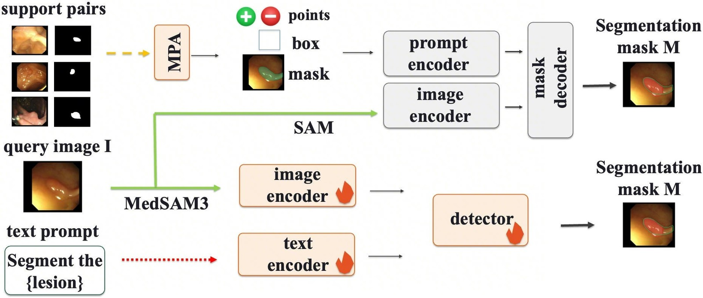
Promptable segmentation backbones (SAM / MedSAM3) are steered with geometric prompts — points, boxes, or a coarse mask — derived from the support set. Adaptation lives in the prompt/interface layer or a lightweight detector, keeping the mask decoder frozen. Delivers the sharpest boundaries and the top Dice (MedSAM3, 0.683).
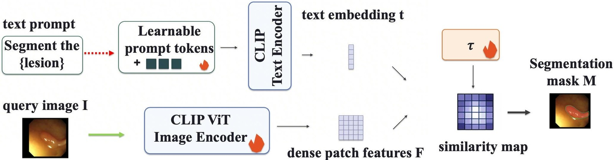
A frozen CLIP ViT encodes dense patch features while learnable prompt tokens + the text encoder produce a class embedding; their similarity map becomes the mask. LoRA adaptation of this pathway yields the strongest target-absence Specificity (ProxyCLIP-LoRA, 0.755) — it abstains when the ROI is truly absent.
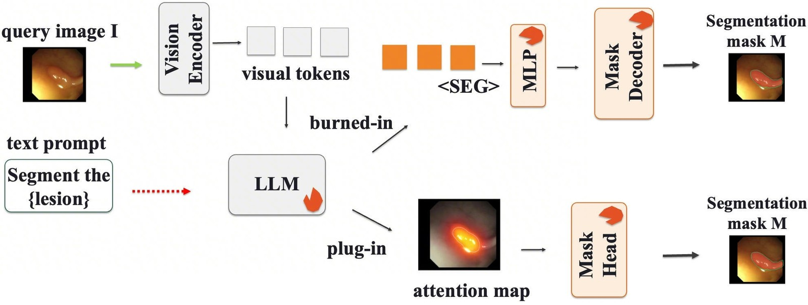
A vision encoder feeds visual tokens to an LLM that emits either a built-in <SEG> token decoded to a mask, or a plug-in attention map routed to a mask head. Powerful but prompt-sensitive: how the MLLM is adapted matters more than which backbone is used.
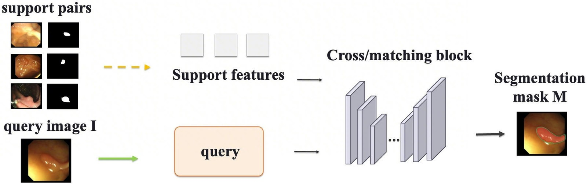
Purpose-built few-shot segmenters (UniverSeg, Tyche) and in-context networks match query features against support features through cross/matching blocks — direct visual adaptation with no text or prompt engineering. Consistent mid-pack Dice with tight, predictable variance.
A consistent story across anatomies, support budgets, and distribution shifts.
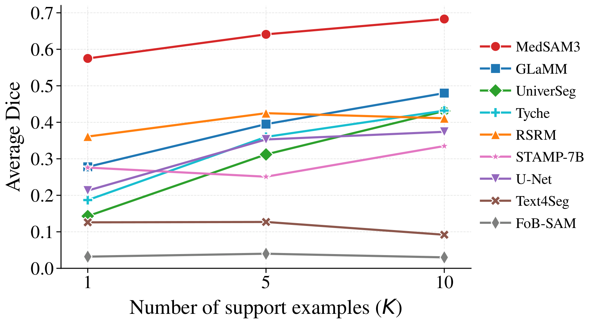
As the support budget grows from K=1 to K=10, methods that genuinely exploit visual support cues improve steadily, while prompt-based and text-driven approaches plateau. The gain from additional annotated masks is far from uniform across families.
Plotting Dice against Specificity shows the two abilities are largely decoupled: several methods that segment present targets well produce false-positive masks when the ROI is absent, underscoring why a single overlap metric is insufficient for clinical reliability.
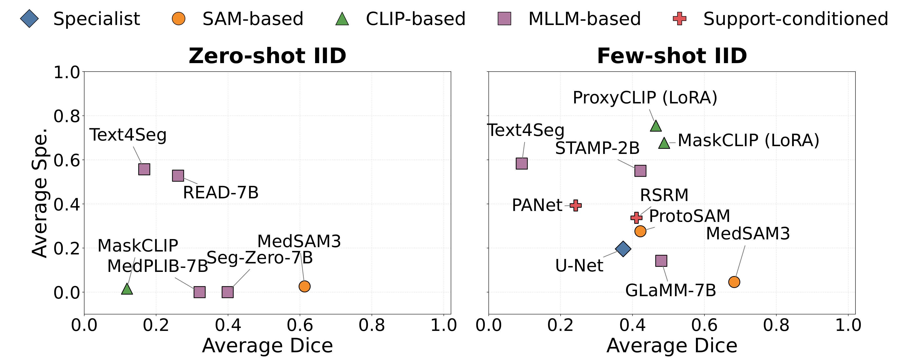
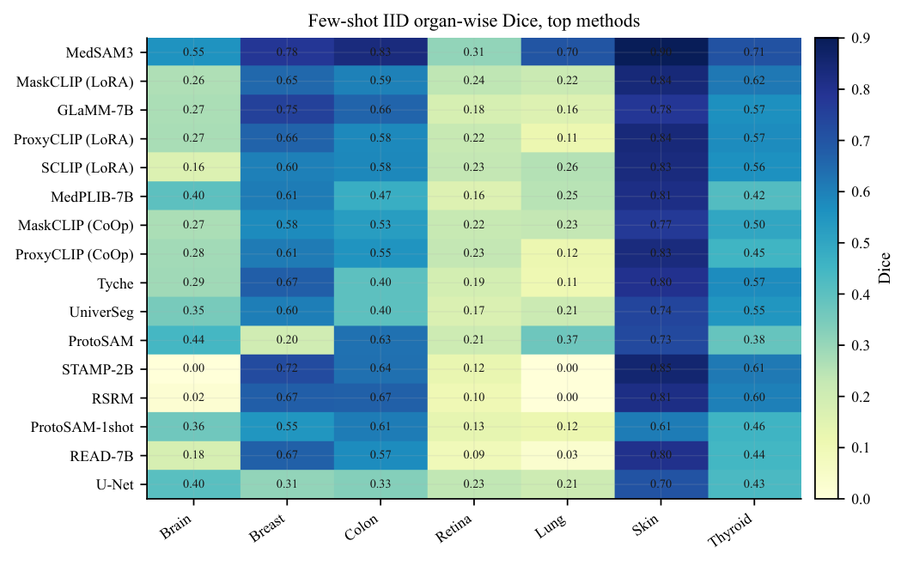
Performance varies strongly across anatomies even within one family, which is why FAME reports task-level macro-averages rather than case-level aggregation that would let large datasets dominate the score.
Benchmark-level average Dice and Specificity in the few-shot mode. Full per-anatomy and per-dataset breakdowns are in the paper and supplementary material.
| Method | Family | Avg Dice ↑ | Avg Spe. ↑ |
|---|---|---|---|
| MedSAM3 | SAM-based | 0.683 | 0.046 |
| MaskCLIP-LoRA | CLIP-based | 0.488 | 0.677 |
| ProxyCLIP-LoRA | CLIP-based | 0.465 | 0.755 |
| SCLIP-LoRA | CLIP-based | 0.460 | 0.737 |
| MedPLIB-7B-LoRA | MLLM-based | 0.445 | 0.010 |
| Tyche | Specialist | 0.432 | 0.191 |
| UniverSeg | Specialist | 0.431 | 0.091 |
| ProtoSAM-post | SAM-based | 0.422 | 0.276 |
| STAMP-2B | MLLM-based | 0.422 | 0.550 |
| U-Net | Specialist | 0.374 | 0.196 |
Four observations that hold consistently across the benchmark.
Direct visual adaptation of support examples generally outperforms prompt-based strategies. MedSAM3 reaches the highest average Dice (0.683) in the ten-shot setting.
Additional support masks improve accuracy only for methods that can effectively utilize them; many prompt- and text-driven models barely move from K=1 to K=10.
Transferring to a previously unseen ROI (semantic shift) is substantially harder than adapting to a new imaging domain (covariate shift).
Strong segmentation does not imply reliable target-absence recognition. LoRA-adapted CLIP methods lead on Specificity (up to 0.755) yet trail MedSAM3 on Dice.
Beyond the headline leaderboard, six analyses explain why the families behave the way they do — each figure paired with what it actually tells us.
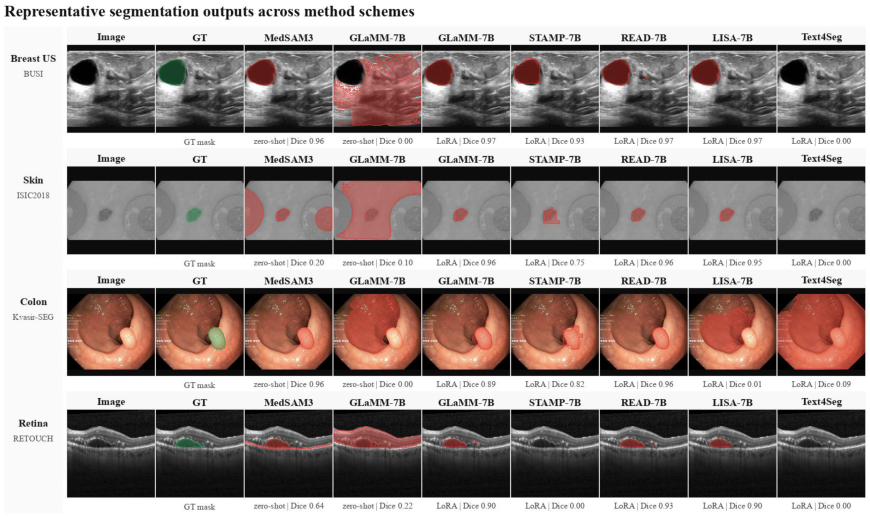
Side-by-side predictions expose distinct failure signatures: SAM-based models produce sharp but sometimes over-confident masks, CLIP-based methods localise coarsely yet abstain more readily, and MLLM-driven pipelines hallucinate plausible-looking regions when the textual prompt under-specifies the ROI. The visual adaptation family tracks the ground-truth boundary most faithfully.
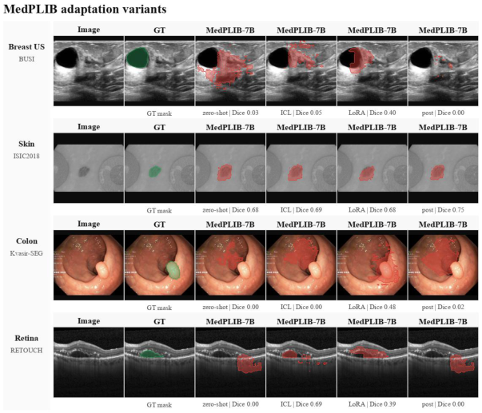
Within a single MLLM backbone, swapping the adaptation strategy changes the mask far more than swapping the base model. LoRA-style visual adaptation recovers usable boundaries, whereas prompt-only variants drift — reinforcing the paper's central claim that exploitation of support examples, not raw model scale, drives few-shot success.
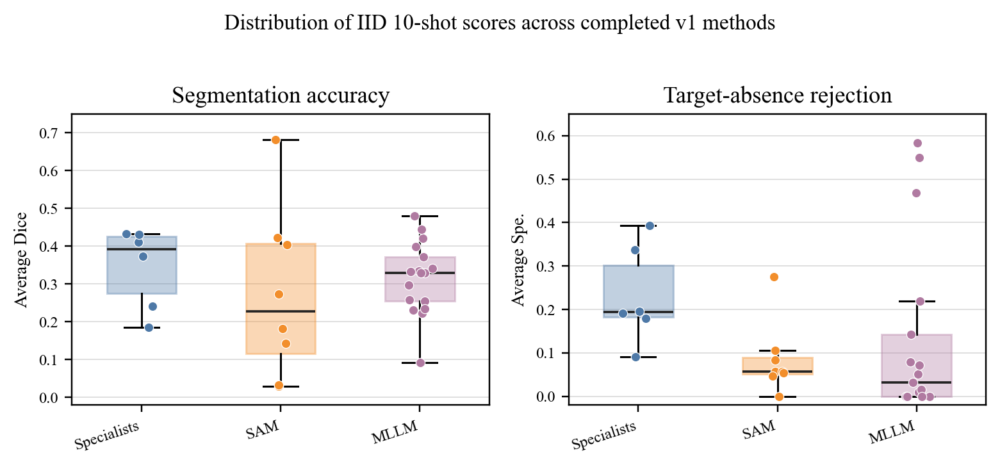
The per-family score distributions are wide and heavy-tailed: a family's mean Dice is a poor predictor of its worst-case behaviour. Specialists cluster tightly, while foundation-model families show long low-Dice tails on the harder anatomies — a reliability gap that a single leaderboard number cannot surface.
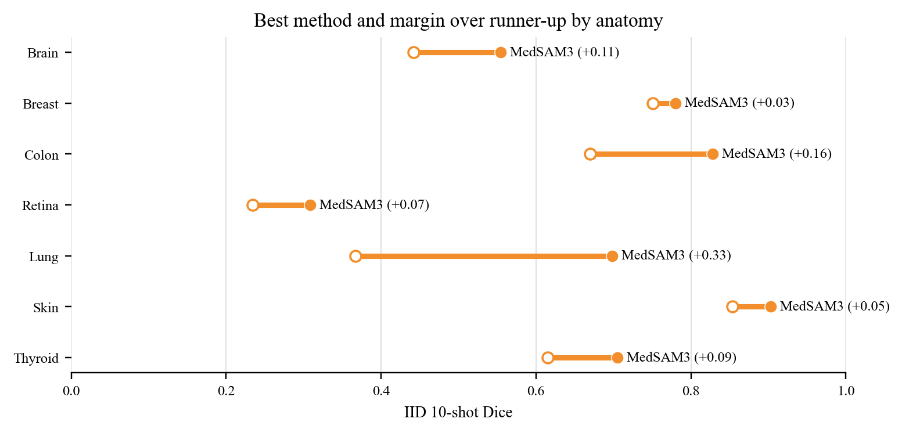
The margin between the best and second-best method flips sign across anatomies. Where boundaries are texture-rich (skin, colon) SAM-based methods dominate; on low-contrast targets (brain, lung lesions) the gap narrows and specialists or CLIP-LoRA close in. This is exactly why FAME reports task-level macro-averages instead of letting large datasets dominate.
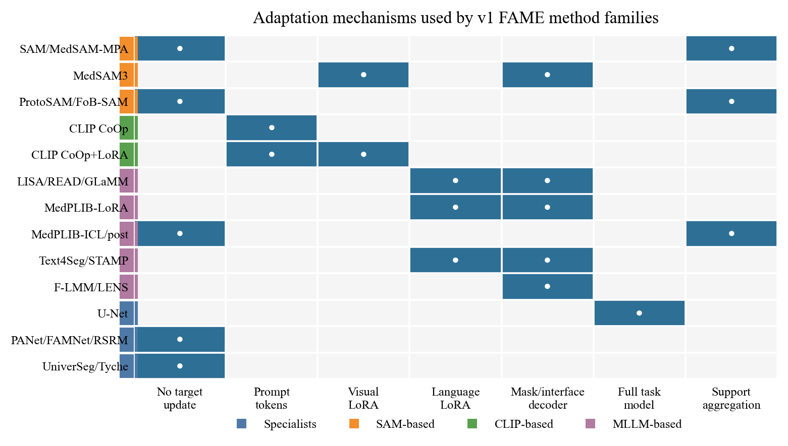
The method-by-strategy matrix makes the interaction explicit: parameter-update adaptation lifts almost every backbone, while interface-only prompting is hit-or-miss. The brightest cells concentrate where a capable visual backbone meets a genuine support-exploiting adapter — a compact recipe for practitioners.
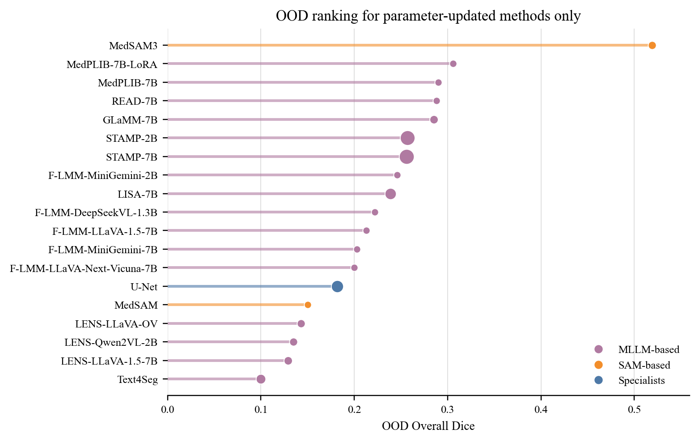
Ranked out-of-distribution transfer separates two very different challenges: adapting to a new imaging domain (covariate shift) is largely solved, but transferring to a previously unseen ROI (semantic shift) collapses performance for nearly every method. The gap between the two bars is FAME's clearest open problem.
If you use FAME, please cite our paper.
@misc{liu2026benchmarkingfoundationlargelanguage,
title = {Benchmarking Foundation and Large Language Models
for Few-Shot Medical Image Segmentation},
author = {Jinghong Liu and Yuchuan Deng and Fanping Liu
and Meng Huang and Xirong Li},
year = {2026},
eprint = {2607.27856},
archivePrefix= {arXiv},
primaryClass = {cs.CV},
url = {https://arxiv.org/abs/2607.27856}
}